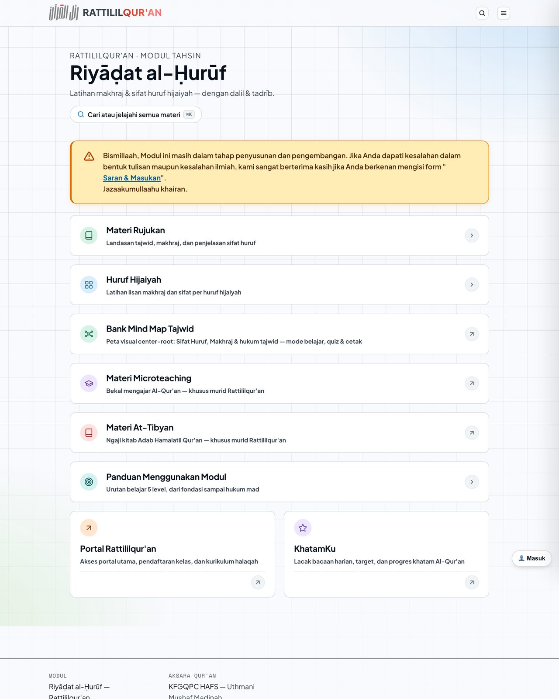
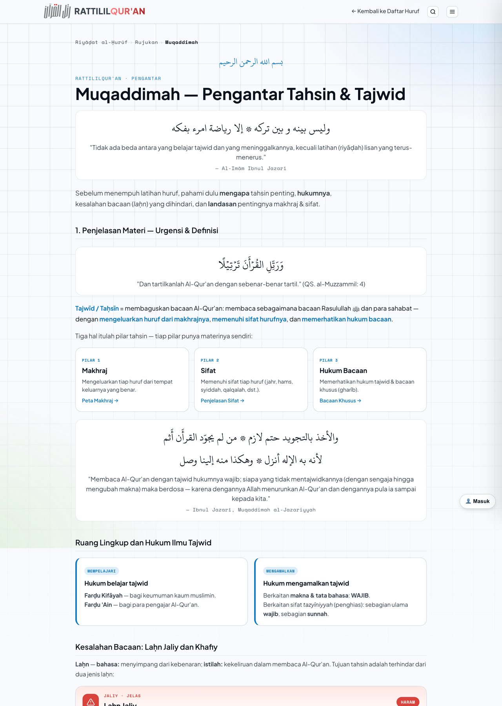

Gratis · tanpa daftar · tanpa akun
Modul Belajar Riyāḍat al-Ḥurūf
Modul tahsin Rattililqur'an: latihan makhraj dan sifat huruf, dengan dalil dan contoh yang sudah diverifikasi pengajar — bahan yang sama dipakai di kelas maupun di rumah.

Dua hal yang membuat latihan mandiri terasa berat — dan bagaimana modul ini menyusunnya. Biidznillah
Bukan tentang fitur. Ini tentang dua masalah nyata yang biasanya baru terasa setelah beberapa bulan belajar.
-
01
Latihan di rumah tanpa arahan
Mengulang sendiri tanpa contoh yang jelas dan tanpa koreksi berisiko memperkuat kesalahan yang sama — sebab bacaan yang keliru lama-lama terasa wajar.
Jawaban modulDalil, contoh, dan langkah latihan yang sudah diverifikasi pengajar — jadi yang Anda tiru di rumah adalah bacaan yang benar, bukan tafsiran sendiri.
-
02
Langsung membaca ayat panjang
Ayat panjang menuntut makhraj, sifat huruf, dan kelancaran bekerja bersamaan, sehingga mudah terasa berat dan latihan berhenti di tengah jalan.
Jawaban modulLatihan dari unit terkecil: per huruf lebih dulu, lalu frasa singkat, baru kemudian ayat utuh — setiap tahap melatih satu keterampilan sebelum naik ke tahap berikutnya.
Enam blok materi, empat terbuka untuk umum
Modul ini dibuat bukan hanya untuk murid, tapi untuk kaum muslimin yang ingin belajar tahsin. Dua blok bertanda "khusus murid" terbuka setelah Anda resmi bergabung dalam halaqah.
- Materi RujukanLandasan tajwid, makhraj, dan penjelasan sifat huruf.
- Huruf HijaiyahLatihan lisan makhraj dan sifat per huruf hijaiyah.
- Bank Mind Map TajwidPeta visual center-root untuk sifat huruf, makhraj, dan hukum tajwid — dengan mode belajar, kuis, dan cetak.
- Materi MicroteachingBekal mengajar Al-Qur'an, untuk murid Rattililqur'an.Khusus murid
- Materi At-TibyanNgaji kitab Adab Hamalatil Qur'an, untuk murid Rattililqur'an.Khusus murid
- Panduan Menggunakan ModulUrutan belajar lima level, dari fondasi sampai hukum mad.

Mulai dalam satu menit
- 1Buka modulnyaLangsung dari peramban HP atau laptop — tanpa mendaftar, tanpa akun.
- 2Mulai dari PanduanIkuti urutan belajar lima level, dari fondasi sampai hukum mad.
- 3Latih per hurufBerlatih di blok Huruf Hijaiyah, lalu ulangi dengan Mind Map dan kuisnya.
- 4Kirim masukanMenemukan kekeliruan? Sampaikan lewat form Saran & Masukan di dalam situs.
Modul ini masih terus disusun dan disempurnakan. Setiap masukan membantu kami memperbaikinya untuk semua yang belajar.
Modul melatih di rumah, kelas mengoreksi bacaan
Modul sudah cukup untuk mulai berlatih. Bila Anda ingin bacaan didengar dan dibenahi langsung oleh pengajar, lanjutkan di kelas.
Belajar dengan modul
- Terbuka kapan saja, tanpa mendaftar.
- Dalil, contoh, dan latihan yang diverifikasi pengajar.
- Mind map tajwid dengan mode belajar, kuis, dan cetak.
Belajar bersama pengajar
- Talaqqi: bacaan didengar dan dikoreksi langsung pengajar.
- Progres, raport, dan ujian bulanan tercatat di Portal Murid.
- Membuka materi khusus murid: Microteaching dan At-Tibyan.
Sering ditanyakan
Apakah modulnya benar-benar gratis?
Ya. Modul terbuka untuk siapa saja, gratis, tanpa perlu mendaftar. Silakan dimanfaatkan selama bukan untuk tujuan komersial.
Apakah saya harus menjadi murid untuk memakainya?
Tidak. Hanya dua blok — Materi Microteaching dan Materi At-Tibyan — yang khusus untuk murid Rattililqur'an.
Dari mana sebaiknya saya mulai?
Dari blok Panduan Menggunakan Modul: urutan belajar lima level, dari fondasi sampai hukum mad.
Bagaimana jika saya menemukan kekeliruan?
Sampaikan lewat form Saran & Masukan di dalam situs modul. Modul ini masih terus disusun dan disempurnakan.
Apa bedanya belajar dengan modul dan ikut kelas?
Modul untuk latihan mandiri. Di Kelas Tahsin Riyadhatulhuruf, bacaan Anda didengar dan dikoreksi langsung oleh pengajar, progres tercatat di Portal Murid, dan ada ujian bulanan.
Coba modulnya sekarang
Mulai dari huruf pertama hari ini juga — gratis, tanpa perlu mendaftar. Biidznillah